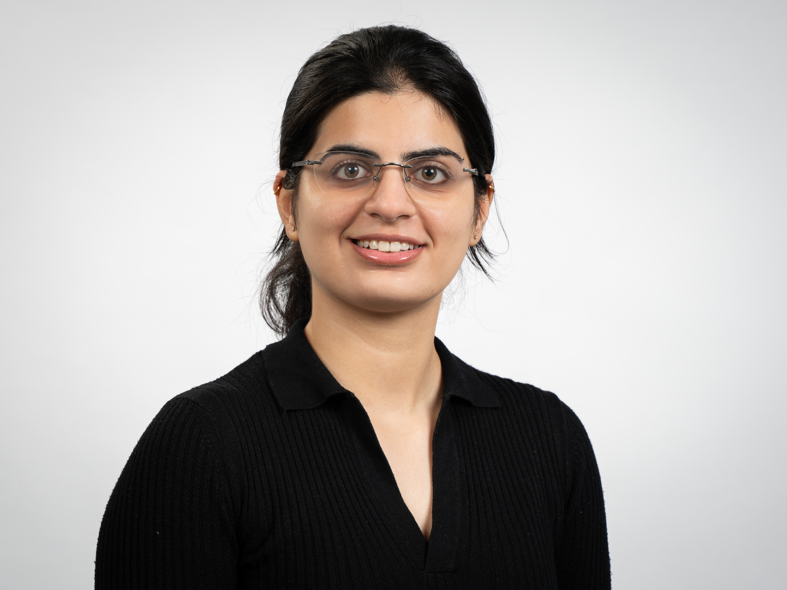

Medical image analysis
Real-time polyp detection and vascular segmentation on 4K colonoscopy video; spectral imaging for early cancer detection.
AI researcher / AI for healthcare
I build machine learning for medicine — from medical image analysis and computer vision to generative AI, federated learning and LLMs. M.Sc. student in Computational Modeling and Simulation (Applied AI) at TU Dresden, with research in Germany, the USA and Taiwan.

Real-time polyp detection and vascular segmentation on 4K colonoscopy video; spectral imaging for early cancer detection.
Snapshot hyperspectral conversion for lesion detection; short-wave infrared data for image-guided cancer surgery.
Privacy-preserving architectures for surgical oncology models, trained across decentralized clinical datasets.
Generative methods for reconstructing and analyzing complex surgical and clinical imaging data.
Benchmarking DeepSeek-R1 and GPT-5 on clinical Type 2 diabetes queries; LLM-generated spinal imaging reports.
From AI dose calculation for particle therapy to real-time detection systems built at my own startup.
NCT Dresden, TUD & UKDD · Prof. Speidel's group (TSO)
Developing privacy-preserving federated learning architectures for surgical oncology models, enabling decentralized training across clinical datasets.
NCT & DKFZ Dresden · Dr. Oliver Bruns' lab
Developing methods for image-guided cancer surgery by analyzing short-wave infrared (SWIR) imaging data and extracting functional features with ITIS software.
D3i Lab, William & Mary
Led DiaBench with Stanford School of Medicine: a full-cycle benchmark pipeline evaluating DeepSeek-R1 and GPT-5 on clinical Type 2 diabetes queries.
National Yang Ming Chiao Tung University, Taiwan
Multi-task models for real-time polyp detection and vascular segmentation on 4K colonoscopy video; LLMs for automated multimodal spinal imaging reports.
Heidelberg Ion-Beam Therapy Center (HIT)
AI dose-calculation frameworks for particle therapy planning, computing high-accuracy LETd/LET maps with PyTorch, TensorFlow and Transformers.
National Chung Cheng University, Taiwan
Snapshot hyperspectral imaging for dermatological lesion detection; ML classifiers on MRI reports to stage Parkinson's Disease severity.
AIVERSE Private Limited
Built proprietary computer vision hardware and software with 98% accuracy in real-time crop defect detection, and developed an Automated Skin Lesion Detection Mask.
TU Dresden · Applied Artificial Intelligence
Under reviewFirst author
Accepted
M.Sc. team project in Prof. Speidel's group at NCT Dresden: generative AI methods and architectures for reconstructing and analyzing complex surgical and clinical imaging data.
Clinical data and physician notes combined with NLP; tuned thresholds reached 83.2% accuracy and 91.7% precision.
Proximity assessment with re-identification algorithms and gait analysis.
Classifies and tracks complex poses in real time.
Real-time road-anomaly detection mapped to geolocation.
CNN features with SVMs for multi-class household items.
Facial recognition, mapping and tracking pipeline.
202211062369202311051025